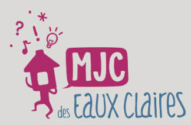
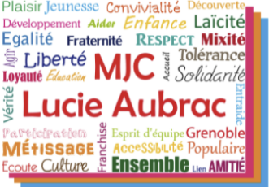
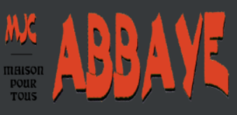
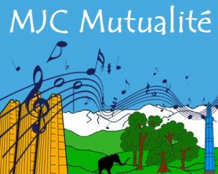
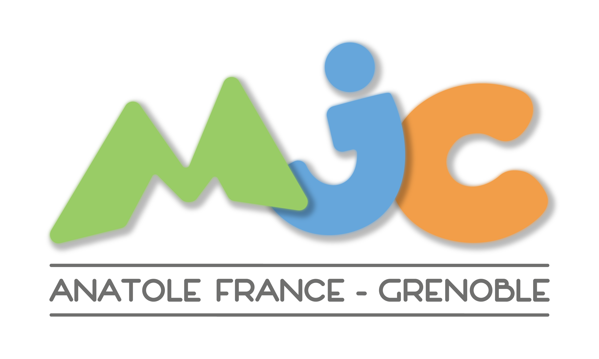

Sept maisons de quartier, chacune avec son identité, ses adhérents, ses projets. Ensemble, elles forment l'Union Locale et font vivre l'éducation populaire à Grenoble.
Berriat – Saint-Bruno · Secteur 1
3 rue Parmentier, 38000 Grenoble
Antennes : Waldeck-Rousseau, École Simone Lagrange, EVS Hareux

MJCEaux-Claires – Mistral · Secteur 3
33 rue Joseph Bouchayer, 38100 Grenoble

MJCCapuche & Clos d'Or · Secteur 4
Espace Capuche : 56 rue du Général Ferrié, 38034 Grenoble
Espace Clos d'Or : 111 rue de Stalingrad, 38100 Grenoble
📞 Capuche 04 76 87 77 59 · Clos d'Or 04 76 22 54 64
✉️ contact@mjclucieaubrac.org

MJCAbbaye – Jouhaux – Châtelet · Secteur 5
1 place de la Commune de 1871, 38100 Grenoble

Mutualité – Préfecture · Secteur 2
5 place Jean Moulin, 38000 Grenoble
Courrier : 10 rue Joseph Chanrion, 38000 Grenoble

Teisseire – Malherbe · Secteur 3
2 rue Anatole France, 38100 Grenoble
Saint-Laurent · Secteur 2
1 place Saint-Laurent, 38000 Grenoble
Les MJC affichées sans logo le seront prochainement, dès que nous aurons récupéré leurs visuels officiels.
Chaque MJC accueille tout au long de l'année — pour s'inscrire à une activité, proposer un projet, ou simplement passer dire bonjour. L'adhésion est solidaire et donne accès à toute la programmation locale.
Nous contacter